Convince Me is a computer program to help you think about your own reasoning. The program lets you type in short, sentence-like statements: things you believe and are sure of, and beliefs/things you're not so sure of. Then you can tell the computer which ideas explain and contradict the other ideas (see Figure 1).
You don't. But just as explaining something to another person can help you understand something, entering an argument into Convince Me can help you clarify your own beliefs. Also, just as people will often tell you what they agree and disagree with in your argument, Convince Me will, in a similar way, tell you which statements your argument helps to affirm or reject and which ones it leaves neutral, from the computer's point of view.
It doesn't, except for what you tell it. When you put a statement in the computer, you'll be asked whether it is a piece of evidence or a hypothesis. Decide carefully, since the computer gives more weight to all pieces of evidence and then tries to figure out which hypotheses and evidence "hang together" best. The computer doesn't understand the meanings of the statements that you type in. It just tries to figure out which statements to believe on the basis of your argument––by what you tell it about what contradicts what, and what explains what. Convince Me uses a computer program called ECHO to do this.
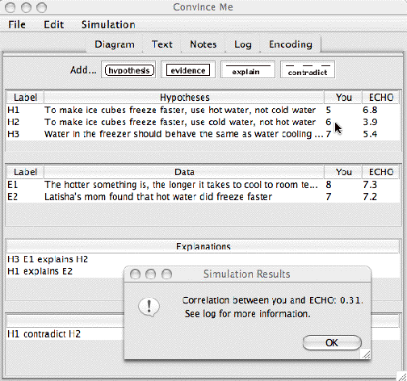
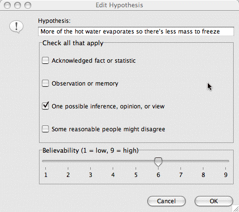
Figure 1. Adding a belief about the speeds at which water of different initial temperatures freezes (bottom) in response to Convince Me's feedback (top).
ECHO is a computer model based on a theory called the "Theory of Explanatory Coherence" (TEC). TEC attempts to account for how people decide the plausibility of beliefs asserted in an explanation or argument. The theory is based on a few "hall of fame" principles of reasoning, such as:
To learn more about TEC's principles, see the Appendix.
ECHO is a computer model based on TEC. In ECHO, arguments are represented as networks of nodes (like knots in a net). A hypothesis or piece of evidence is represented by a node, and explanatory or contradictory relations are represented by links between nodes. Hypothesis evaluation is treated as the satisfaction of constraints determined from the explanatory relations (that is, explanations and/or contradictions), TEC's principles, and from a few numerical parameters. Given a network of statements and relations between them, node activations are updated in parallel using a simple "connectionist" settling scheme. When the network of statements settles (or stabilizes), the nodes representing the most mutually coherent hypotheses and evidence are active, and the nodes representing inconsistent rivals are deactivated.
For example, suppose Chris says:
Some people think that all animals (including humans) were created in their present form, about 5000 years ago. Others believe that animals evolved from earlier life slowly, over millions of years. Both beliefs explain why animals exist. However, only the latter, evolutionary, hypothesis explains why transitions between forms in the fossil records appear to be gradual, and why scientists have found some fossils they estimate are over a million years old.
This could be represented in ECHO as:
Hypothesis H1: Animals were created in their present form about 5000 years ago.
Hypothesis H2: Animals evolved from earlier life over millions of years.
Evidence E1: Animals exist.
evidence E2: Transistions between forms in the fossil records are gradual.
evidence E3: Scientists have dated some fossils at over a million years old.
H1 competes with H2
H1 explains E1
H2 explains E1
H2 explains E2
H2 explains E3
Or, in graphical network form (where solid lines represent explanatory links, and the dashed line represents a competing/contradictory link):
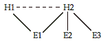
Given a scenario such as this, ECHO generates a numerical value for each statement that indicates how much it believes the statement. In general, the more positive the value, the more ECHO "believes" the statement; the more negative the value, the more ECHO "disbelieves" the statement. In this case, ECHO believes H2 over H1 since H2 explains more of the evidence.
The File menu lets you create a new argument, load an existing argument, or save your argument (see Figure 2).
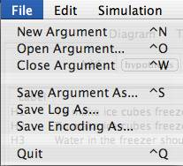
Figure 2. The File menu.
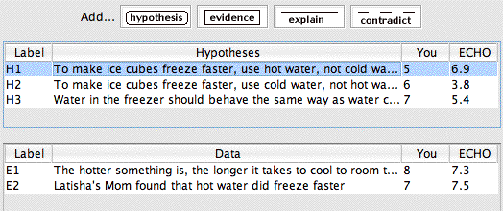
Figure 3. Text window with Hypotheses andData fields, with part of the"Ice Cubes" argument we saw earlier.
When you want to enter statements for your argument, click the hypothesis or evidence button at the top of the Convince Me screen (see Figure 3). A dialog box will then ask you what statement you would like to add (see Figure 4). It will also ask you to check one or more boxes (you may check no boxes if none really apply) and how believable the statement is to you. If the statement is a piece of evidence, Convince Me also wants to know how reliable you think it is.
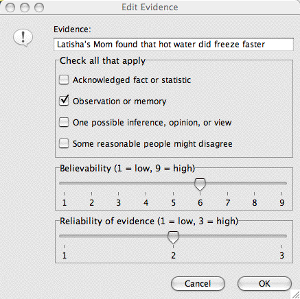
Figure 4. Dialog box to add or edit a statement of evidence.
Each statement that you add is represented by an icon in the Diagram window. As you enter your propositions, a round yellow icon appears for every hypothesis, and a square green icon appears for every piece of evidence (see Figure 5). The label for the proposition is below the icon, and if you pass the mouse arrow over an icon, the text of the statement that it represents will show up under the diagram.
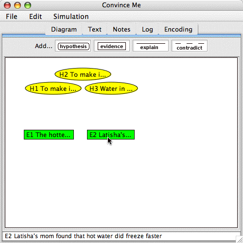
Figure 5. Statement icons in the Diagram window and text of proposition E2 below the diagram.
If you want to change the text of a statement, or reclassify it as hypothesis or evidence or vice versa, go back to the Text window, click on the statement you want to modify in the Hypothesis field, then select Edit Selected Propositions from the Edit menu (see Figure 6). If you want to delete a statement, select the statement and then click Delete Selected from the Edit menu. After you've entered some statements, you can specify some explanations and contradictions among them.
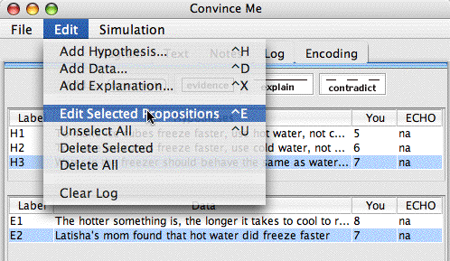
Figure 6. Editing a selected proposition from the Text window.
Create a new argument by selecting New Argument from the File menu. Add the following hypotheses and evidence to your argument (from the "Ice Cubes" argument in Unit 2). Don't specify any explanations and contradictions yet.
Hypotheses:
To make ice cubes freeze faster, use hot water, not cold water (H1).
To make ice cubes freeze faster, use cold water, not hot water (H2).
Water in the freezer should behave the same way as objects cooling to room temperature (H3).
Evidence:
The hotter something is, the longer it takes it to cool to room temperature (E1).
Latisha's Mom mfound that hot water did freeze faster (E2).
To create an explanation, click on the explain button. A dialog box will appear with a list of statements, and ask you to specify your explanation (see Figure 7). You can select multiple statements by holding down the shift key when you click on a statement. If you select multiple statements in the top field, the computer will interpret these statements as jointly explaining them statement in the bottom field (e.g., Todd singing and Mary singing jointly explains why it sounded like a duet). Your explanation will then appear in the explanations field (see Figure 8) and in the Diagram window.
To delete an explanation, select the explanation in the Text window and then click Delete Selected from the Edit menu.
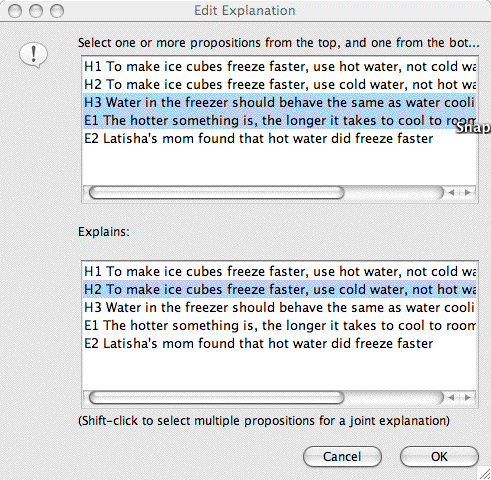
Figure 7. Dialog box for adding an explanation.
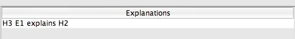
Figure 8. Explanations field after the first addition from Exercise 2.
Add the following explanations to your ice cubes argument.
E1 and H3 jointly explain H2
H1 explains E2
To specify a contradiction, click on the contradict button. A dialog box will appear with a list of statements, and ask you to specify your contradiction. Select one statement from each list (see Figure 9). Your contradiction will then appear in the contradiction field and in the Diagram window.
To delete a contradiction, select the contradiction in the Text window and then click Delete Selected from the Edit menu.
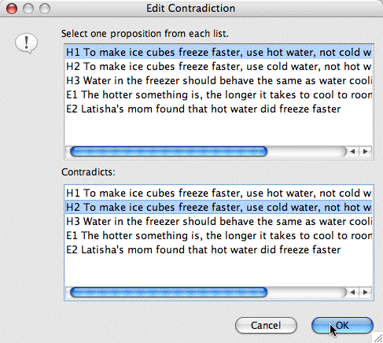
Figure 9. Dialog box for adding a contradiction.
Add the following contradiction to your ice cubes argument.
H1 contradicts H2
Convince Me will draw a diagram of your argument in the Diagram window. You can rearrange the diagram so that it makes sense to you (see Figures 10 and 11). You can move the icons by clicking on them with the mouse pointer and slowly dragging them across the screen while holding down the mouse button. The explanatory links you have entered will be drawn with solid lines and the contradictory links will be drawn with dotted lines.
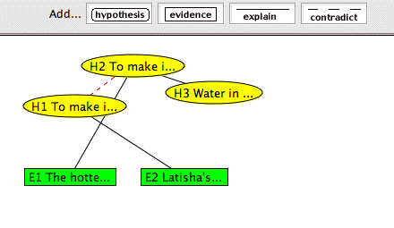
Figure 10. Diagram window for Ice Cubes argument with original arrangement of icons.
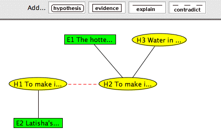
Figure 11. Diagram window for Ice Cubes argument with icons rearranged to form a more meaningful diagrammatic representation of the argument.
Sometimes an explanation or contradiction link (solid or dotted line), or even a proposition icon, on the diagram may be hidden due to the positioning of the proposition icons. If you add an explanation, contradiction, or statement and you notice that it does not appear on the diagram, rearrange the icons so that all the links and icons are displayed.
Arrange the icons for the "Ice Cubes" argument as pictured in Figure 11.
The diagram that you just built is arranged such that the propositions that explain something else are positioned above the propositions they are explaining. Also, the propositions supporting a single hypothesis are positioned nearby, whereas propositions supporting more than one hypothesis could be positioned centrally. Does this seem to be a good way to view the argument? What other features of the diagram may help you to “see” the argument better? Feel free to rearrange the diagram so that it represents the argument in a form meaningful to you.
Now you can run the simulation and see what the computer thinks. But first, you should rate how strongly you believe each of the statements you entered, so you have something to compare with the computer's evaluations. If you did not rate the believability of each statement as you entered it, do that now. Click on a statement that you want to rate and then click on Edit Selected Propositions from the Edit menu. Then enter your rating, on a scale from 1 (low, completely disbelieved), to 9 (high, completely believed), where 5 is "neutral” (see Figure 12).
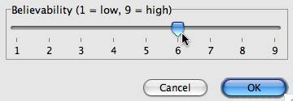
Figure 12. Entering a believability rating.
Enter your believability ratings for the statements in the "Ice Cubes" argument, if you did not already do so when you created the statements.
To get an idea of the overall agreement between your ratings and ECHO's, you can run the ECHO model. To do so, go to the Simulation menu and select Run (see Figure 13). ECHO will then compute a correlation between your ratings and ECHO's activations (see Figure 14). The possible range for the correlation is -1 to 1.
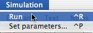
Figure 13. Use the Simulation menu to run the model.
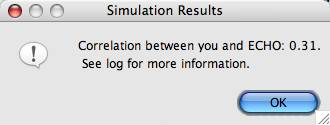
Figure 14. How your ratings compare to ECHO's activations, overall.
Run a simulation for your argument (choose Run from the Simulation menu).
You can compare your ratings with ECHO's in two ways. The higher the overall correlation, the more ECHO agrees with your ratings--based on your argument. (A negative correlation means that your ratings are actually disagreeing with ECHO's activations.) Table 1 shows the ranges of correlation values used to determine how related your ratings are to ECHO's activations overall.
In addition, in the Text window, you can see your individual ratings as well as ECHO’s individual activations, and see how they agree and disagree (see Figure 15).
Table 1. Determining the overall agreement between your evaluations and ECHO's.
| Correlation Range | Relation between your evaluations and ECHO's |
| -0.99 up to -0.40 | Mostly opposite |
| -0.40 up to -0.01 | Mildly opposed |
| 0.0 | Unrelated |
| 0.01 up to 0.40 | Mildly related |
| 0.40 up to 0.70 | Moderately related |
| 0.70 up to 0.90 | Highly related |
| 0.90 up to 0.99 | Almost identical |
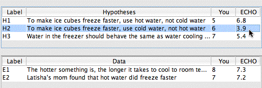
Figure 15. Comparing your individual ratings with ECHO's individual activations.
How do your believability ratings compare to ECHO's? For what statements do your and ECHO's ratings differ the most? For which statements are they the most similar? How well do your ratings agree with ECHO's overall? If you and ECHO didn't correlate as well as you thought you would, why might that be?
If you don't "convince" Convince Me the first time, that is, if ECHO doesn't agree with your evaluations, there are a few things you can try. For instance, look at the structure of your argument: Do you want to change it? Did you leave some explanations or contradictions out? Should some independent explanations be a joint explanation or vice versa? Look at your statements: Do you want to add or delete some? Do you want to change some of your ratings? (Don't say that you believe something if you don't, just because ECHO "believes" it!)
You could even try changing some of ECHO's numerical parameter settings to make ECHO better model your way of thinking. If you want to change the parameters, select Set Parameters... in the Simulation menu. A Parameters window will appear (see Figure 16). If you change the parameters and then want to reset them to the original values, click on the Use Default button in the Parameters window.
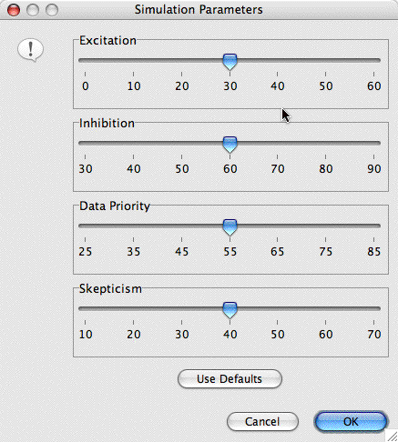
Figure 16. Parameters window.
For example, if you think ECHO is being too "tolerant" compared to you, you might lower the Excitation (explanation) weight and/or raise the Inhibition (contradiction) weight. If you think ECHO is not "tolerant" enough, you could raise the Excitation weight and/or lower the Inhibition weight. If you think ECHO isn't giving the proper weight to evidence, you could lower or raise the Data Priority. If you think ECHO is being too "skeptical," you could lower the Skepticism weight. If ECHO is not as skeptical as you, you might raise Skepticism.
It is possible that you may look at all of these things, make some changes, re-run the simulation, and ECHO still won't agree with you like you thought it would. That's okay, sometimes you just can't convince everyone, no matter how hard you try! But the important thing is that you think about your argument, reflect on it, and think about your own reasoning strategies.
Implement at least one change to your ice cubes argument. Feel free to add, delete, or modify whatever statements, explanations, or contradictions that seem appropriate. (For example, you might add the information that since more of the hot water evaporates, there is less water to freeze, so it takes less time to freeze than the eventually-more-massive cold water.) Rearrange the diagram to reflect your changes to the argument.
Create an argument in Convince Me based on the "Rats" text from Unit 2 (the argument is reproduced below). Run an ECHO simulation of your argument, and based on ECHO's feedback, make at least one change to your argument. Feel free to add, delete, or modify whatever statements, explanations, or contradictions that seem appropriate.
A UC Berkeley researcher believed that interesting, educational experiences in early life lead to larger brains. She found that rats raised alone in the empty cages had smaller brains than the rats raised together in the interesting environment. Based on this experiment, she concluded that children who have interesting, educational experiences in preschools will< grow up to be more intelligent adults than children who do not attend preschool.
A preschool teacher disagreed with the researcher. She said that the rat experiment could not be used to explain the advantages of attending preschool.
That's all for Unit 3! You may want to read through the summary Glossary of terms, and see the Appendix to learn more about how Convince Me evaluates your arguments.
Argument: A system of beliefs that is generally more complex than one explanation/ contradiction, but less than that of a theory.
Belief: A hypothesis or piece of evidence.
Believabilty rating : Given a proposition, how strongly it is believed.
Confirmation bias: When one seeks to support certain arguments/beliefs in a biased fashion, with out trying to disconfirm them.
Contradiction/Conflict: The relation between a pair of beliefs that are mutually exclusive or (at least) unlikely to both be true.
Disconfirmation: When one attempts to garner evidence that contradicts a (even favorite) theory.
Evidence: A belief that seems based on "objective-like" criteria; for example, an acknowledged common fact or statistic, or a reliable memory or observation.
Explanation: Something that shows how or why something happened. The coordination of beliefs such that some are accounted for (often causally) by others.
Hypothesis: One possible belief that explain/tells something of interest.
Joint Explanation: An explanation in which two or more beliefs together (vs. independently) explain a third belief.
Primacy bias: A tendency to give too much credence to early information.
Recency bias: A tendency to give too much credence to recent information.
Theory: A system of evidential and hypothetical beliefs that have a unifying theme.
Symmetry: "Coherence and incoherence are symmetric relations." This means that if one belief explains (or conflicts with) another, the beliefs "send activation" back and forth to each other. (E.g., If I'm playing cards with you, then you're playing cards with me. If I'm not playing with you, then you're not playing with me.)
Explanation: "A belief that explains a proposition coheres with it. Also, beliefs that jointly explain a proposition cohere with it, and cohere with each other." Two or more beliefs that together explain a third belief are generally called "cohypotheses" if they are both hypotheses (or sometimes "cobeliefs" if one or more is evidence). According to this principle, for example, cohypotheses "send activation" to each other, as well as to the explained belief. (E.g., Todd singing and Mary singing jointly explains why it sounded like a duet, and send activation to "duet", as well as to each other.)
Simplicity: "The plausibility of a proposition is inversely related to the number of explaining statements needed to explain it." The simpler the explanation, the more likely it will be believed. That is, lots of assumptions (or co-beliefs) are often counterproductive, compared to fewer assumptions.
Data Priority: "Results of observations have an extra measure (boost) of acceptability." This means that acknowledged facts, memories, and observations carry more importance than "mere" hypotheses.
Contradiction: "Contradictory hypotheses incohere." This means that beliefs that conflict with each other send "negative activation" (or "inhibition") to each other, like rival members of two different "gangs."
Competition: "Competing beliefs (which explain the same evidence or hypotheses but are not themselves explanatorily related) incohere." This means that highly independent explainers of the same proposition conflict with each other, and hence send "negative activation" to each other, like rival gang members vying for the same turf. (E.g., If you hear a report that an evil dictator was shot, and later hear that he was stabbed, you might assume that the two reports offer competing hypotheses.) This principle may be optionally invoked in a variant of ECHO, called ECHO2, which automatically infers inhibitory relationships between propositions that independently (not jointly) explain a third proposition.
Acceptability: "The acceptability of a proposition increases as it coheres more with other acceptable propositions, and incoheres more with unacceptable propositions." This basically says that how much a belief is believed is a function of who its friends and enemies are, and how much they are believed.
Overall Coherence: "The overall coherence of a network of propositions depends on the local pairwise cohering of its propositions." This basically means that the goodness of a whole "neighborhood system" of beliefs is determined by the believability of its members and their relationships.